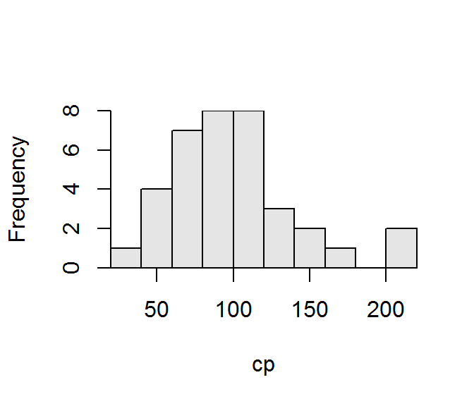

## [1] "Figure 1: Histogram of the creatine phosphokinase concentrations in 36 male volunteers."The histogram is in Figure 1.

Figure 1: Histogram of the creatine phosphokinase concentrations in 36 male volunteers.
library(NCStats)
df <- read.csv("data/CreatinePhosphate.csv")
hist(~cp,data=df)